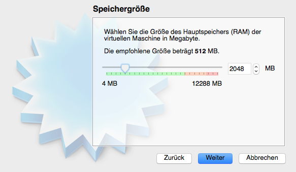

Das ist gar nicht so schwierig, wie Sie vielleicht denken würden.
Für diese Anleitung verwende ich das Programm VirtualBox, welches kostenlos für Windows, Linux und MacOS erhältlich ist. Bitte installieren Sie dieses Programm, bevor Sie weiterfahren.
Besorgen Sie sich ein ISO-Abbild von manjaro-linux xfce 64 Bit (Ausser, Wenn Ihr Computer nur einen 32-Bit Prozessor hat. Aber dann sollten Sie sich sowieso überlegen, ob Sie diesen Computer verwenden wollen)
Starten Sie VirtualBox und klicken Sie oben auf "Neu". Es erscheint folgendes Fenster:

Für den namen können Sie etwas Beliebiges einsetzen, die anderen beiden Optionen setzen Sie bitte wie hier genannt, und klicken Sie dann auf "weiter".
